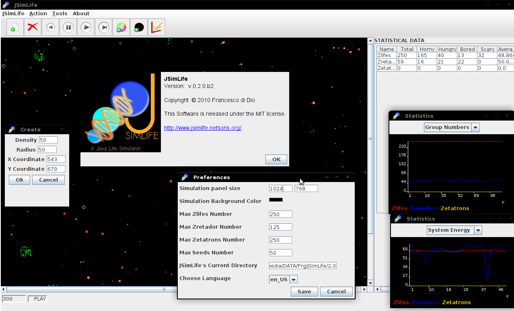
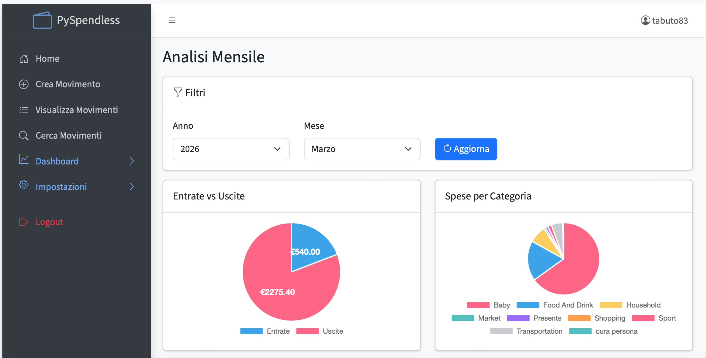

JSimLife
Simulatore A-Life in Java 6. Ambiente dinamico con forme di vita dotate di codice genetico e reti neurali. Licenza MIT.
- Java 6
- A-Life
- Neural Network
- Open Source
Technical Manager
Engineering Leader · GenAI & Spec-Driven
Java · Quarkus · Python · OAuth2/OIDC · Spec-Driven · GenAI
Manager tecnico con oltre 2 anni di esperienza nella guida di progetti critici per la GDO, focalizzato sull'integrazione tra ingegneria del software tradizionale e innovazione GenAI.
Leadership nell'adozione di metodologie Spec-Driven per la produzione di software enterprise, gestione di progetti SSO & Identity Management per oltre 5 milioni di account, architetture microservizi (Quarkus) e sicurezza (OAuth2/OIDC).
Sempre interessato a confrontarmi su come la GenAI stia ridefinendo i processi di sviluppo enterprise. Parliamone!
Alcuni progetti personali a cui ho lavorato nel tempo libero.

Simulatore A-Life in Java 6. Ambiente dinamico con forme di vita dotate di codice genetico e reti neurali. Licenza MIT.

Web app per la gestione condivisa delle spese familiari in Python 3 e Flask, deployata su PythonAnywhere con integrazione OAuth2 Google. Sviluppata interamente con approccio spec-driven.
Laboratorio creativo dove la cultura geek incontra la comunicazione strategica. Trend complessi, innovazioni tecnologiche e pop culture trasformati in contenuti narrativi capaci di generare community.
Un riepilogo della mia carriera professionale.
Engineering S.p.A.
Monitoraggio economico, allocazione e crescita risorse, guida tecnica di progetti con focus su GenAI.
Engineering S.p.A.
Anonimizzazione GDPR di 5M record con workflow 100% Spec-Driven GenAI. Stack: Java 8, Spring Batch, DB2.
Engineering S.p.A.
Progetti GDO: SSO con 5M+ account, MFA, OAuth2/OIDC. Stack: Quarkus, Oracle DB 19, Angular.js.
Laurea in Ingegneria Informatica
Università degli Studi di Palermo · 100/110 · 2010
Sono disponibile per collaborazioni, opportunità professionali o semplicemente per una chiacchierata tecnica.
f.didio.1983@gmail.com